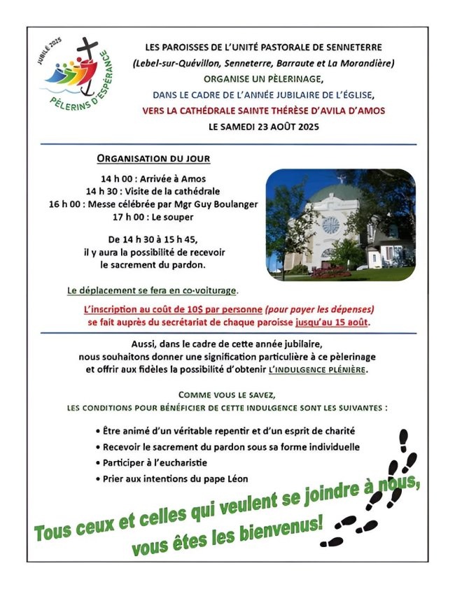

Pèlerinage à Amos (23 août)

Tirage (24 août)
Un tirage aura lieu le 24 août prochain en notre église au profit de la Fabrique Saint-Paul de Senneterre.

1er prix : Balançoire (commanditée par Ultramar Sélection Plus de Senneterre)
2e prix : Cabane et mangeoire d’oiseaux
3e prix : Catalogne et nappe de table
Prières aux cimetières (6 sept.)
Samedi le 6 septembre, il y aura prières dans les trois cimetières de notre paroisse. La prière durera plus ou moins vingt minutes. Après, celui qui veut se recueillir ou mettre une fleur sur la tombe des leurs va pouvoir le faire. L’horaire de ce jour sera le suivant : cimetière Ste-Cécile de Belcourt à 11h00, cimetière St-Paul à 13h30 et, finalement, cimetière St-Louis à 14h30. Une invitation toute spéciale est faite à ceux et celles qui ont mis un proche en terre au cours de l’année écoulée.
Bénédiction des sacs d’école (7 sept.)
Dimanche le 7 septembre prochain, durant la messe de 16h00, il y aura bénédiction des sacs d’école. Ce sera aussi l’occasion de confier au Seigneur la nouvelle année scolaire qui commence. Les enfants (avec leurs sacs d’école), les parents et les enseignants sont invités à cette messe.
Inscription formation à la vie chrétienne
La Paroisse St-Paul de Senneterre informe les paroissiens et paroissiennes que les inscriptions pour la formation à la vie chrétienne, c’est-à-dire la catéchèse des enfants pour le Premier Pardon, la Première Communion et la Confirmation, vont commencer bientôt. Même les adultes qui n’ont pas reçu l’un ou l’autre sacrement et qui désirent l’avoir sont invités à se faire inscrire.
Pour vous inscrire, présentez-vous au bureau du secrétariat de la paroisse ou appelez le 819-737-2045.
Équipe de la Joie (recrutement)
Notre mission est d’apporter de la joie aux personnes de notre entourage, surtout celles qui sont seules ou malades. Nous avons besoin de bénévoles pour remplir ce mandat.
Comment ? En soulignant les fêtes (Noël, Pâques, anniversaires), visites, téléphones et toutes initiatives pour contrer l’isolement de nos aînés
Si vous êtes intéressé(e)s à joindre l’équipe de la Joie, vous pouvez donner votre nom au secrétariat au 819-737-2045, ou encore contactez le 819-737-4667. Merci !
Capitation 2025
Afin de garder notre Église bien vivante, votre don est une façon de la conserver au niveau financier pour s’assurer un lieu de culte accueillant et sécuritaire.
Vous pouvez également faire vos dons via la Poste en les adressant à
La Fabrique St-Paul, 700, 8e Avenue, Senneterre, J0Y 2M0.